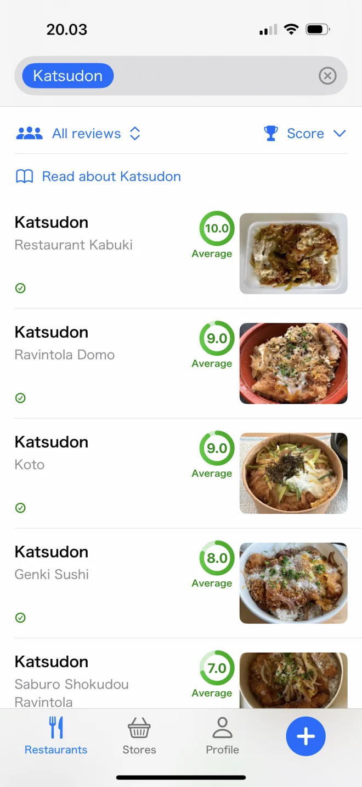
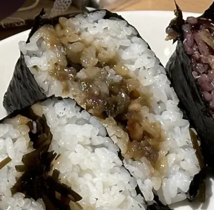
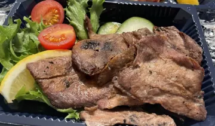
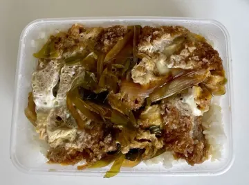
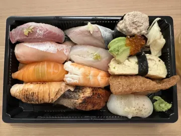
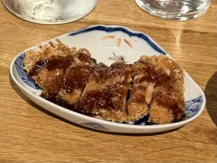
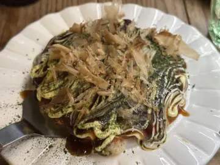

Japanilaiset ravintolat Helsingissä: näin löydät aidot
Helsingissä on enemmän japanilaisia ravintoloita kuin koskaan, mutta ”japanilainen” kyltissä voi tarkoittaa mitä tahansa perheen pyörittämästä shokudōsta sushibuffetiin, jossa saa syödä niin paljon kuin jaksaa. Näin erotat ne toisistaan ja löydät annoksen, joka on oikeasti tilaamisen arvoinen.
Millaisia japanilaisia ravintoloita Helsingissä on

Ennen kuin valitset paikan, kannattaa tietää, millaista ravintolaa katsot. Jokainen tekee eri asiaa, ja paras sushipaikka on harvoin paras katsudon-paikka.
- Sushibaarit ja omakase-tiskit: pieniä, usein vain varauksella, ja kaikki rakentuu raa’an kalan ja riisin ympärille. Katso paras sushi Helsingissä.
- Ramen-paikat: yksi tai kaksi lientä hyvin tehtynä. Katso paras ramen Helsingissä.
- Shokudōt (arkiruokalat): riisikulhoja, curryä, tonkatsua ja settiaterioita. Täältä löydät katsudonin ja gyudonin.
- Izakayat: japanilaisia pubeja pikkuannoksille, yakitorille ja juomille. Katso izakaya Helsingissä.
- ”Aasialaiset” ravintolat japanilaisella listalla: sushia pad thain ja kevätrullien vieressä. Osa on hyviä, mutta pelkästä ruokalistasta sitä ei näe.
Miksi tähtiarviot eivät auta valitsemaan
Google ja Tripadvisor arvioivat ravintolan: palvelun, sisustuksen, odotusajan. Kun tekee mieli japanilaista, haluaa yleensä tietää jotain tarkempaa: missä on paras tempura? 4,6 tähden paikassa voi olla loistava sushi ja unohdettava katsudon.
Juuri tämän aukon Savory Scores täyttää. Arviot liitetään annoksiin, ei ravintoloihin, ja annokset on ryhmitelty japanilaisiin ruokakategorioihin, joten voit vertailla kaupungin kaikkia gyudoneja rinnakkain.
Savory Scoresin datasta
Helsingin parhaiksi arvioidut japanilaiset ravintolat
| # | Kuva | Ravintola | Pisteet (ka.) | Autenttisuus (ka.) | Viimeksi arvioitu |
|---|---|---|---|---|---|
| 1 |  | Onigiri Musubi | 8.8 | 8.7 | 10/2025 |
| 2 |  | Ravintola Kamome | 8.7 | 7.5 | 5/2025 |
| 3 |  | Restaurant Kabuki | 8 | 9 | 11/2025 |
| 4 |  | Roji | 8 | 9 | 6/2025 |
| 5 |  | Murasaki | 7.7 | 9.2 | 7/2025 |
| 6 |  | Sake Bar & Izakaya | 7.5 | 9 | 12/2024 |
Perustuu 172 arvioon japanilaisista ruoista 48 paikassa Helsingin seudulla; mukana paikat, joilla on vähintään 4 arviota, tilanne lokakuussa 2026. Pisteet ja autenttisuus ovat keskiarvoja kymmenen pisteen asteikolla. Useimmilla annoksilla on toistaiseksi vain yksi tai kaksi arviota ja ruokalistat muuttuvat, joten katso ajantasainen järjestys sovelluksesta. Söitkö paikassa, jonka pitäisi olla tällä listalla? Arvioi se Savory Scoresissa.
Näin löydät Helsingin parhaan japanilaisen ruoan Savory Scoresilla
- Hae ruokakategoriaa. Kirjoita annos, kuten Katsudon, Tempura tai Ramen. Saat Helsingin kaikki versiot kuvineen, ravintoloineen ja keskiarvopisteineen.
- Järjestä pisteiden tai autenttisuuden mukaan. Autenttisuusjärjestys nostaa perinteisimmät versiot kärkeen, mikä on kätevää, kun haluat aitoa etkä fuusiotulkintaa.
- Lue annoksesta. Jokaisella kategorialla on lyhyt ”Lue kategoriasta…” -esittely, joten tiedät, mitä tilaat.
- Tallenna myöhemmäksi. Tallenna annos, ravintola tai koko kategoria ja napauta nälän yllättäessä Avaa kartalla.
Aito vai ”japanilaistyylinen”
Autenttisuus ei ole snobismia. Se on hyödyllistä tietoa: jos olet kasvanut Japanissa tai rakastunut ruokaan siellä, haluat tietää, mitkä paikat maistuvat samalta. Kokosimme kokonaisen tarkistuslistan siitä, miten tunnistaa aito japanilainen ravintola. Lyhyesti: lyhyt ruokalista, japanilaiset annosnimet, kunnioittavasti kohdeltu riisi ja settiateriat (teishoku) ovat hyviä merkkejä.
Löydä suosikkisi Helsingistä. Savory Scores on ilmainen iPhonelle ja iPadille: hae annosta, vertaa kaikkia kaupungin versioita ja arvioi se yhdellä napautuksella.